|
|
| soft corals text index | photo index |
| Phylum Cnidaria > Class Anthozoa > Subclass Alcyonaria/Octocorallia > Order Alcyonacea > Family Alcyoniidae |
| Omelette
leathery soft coral Sarcophyton sp.* Family Alcyoniidae updated Dec 2024 Where seen? This large disk-shaped leathery soft coral that resembles a fried egg is commonly seen on our Southern shores. On coral rubble. Features: Colony 30-50cm or larger. The colony is usually mushroom-shaped; with a flat, broad disk attached to a hard surface by a short stalk. The diameter of the disk is usually wider than that of the stalk. Polyps only found on the upperside of the broad disk. The edge of the disk may be highly ruffled, especially when submerged. There are no ridges or finger-like structures sticking out of the disk. When out of water, the colony often flops over into a flat disk that looks like a rather badly fried egg! The colony can also contract forming puckered looking balls. The common tissue may be pink, yellow, orange, greenish or brown. The colony has both autozooids and siphonozooids. Autozooid polyps have long slender body columns (1-2cm) with 8 branched tentacles that are usually white. The siphonozooids do not emerge from the body membrane and function to pump water through the colony. These are small, numerous and look like little dots, densely arranged among the taller autozooid polyps. The tall autozooids can retract completely into the common tissue. Out of water, the surface of the common tissue has two different kinds of holes; bigger ones where the retracted autozooids are, and smaller ones where the siphonozooids are. 'Melting' omelette: During mass coral bleaching, this leathery soft coral not only bleaches but is sometimes also seen to 'melt'. Large holes form in the common tissue so the colony resembles melting cheese. Eventually, the result is that the colony divides into several smaller blobs. Perhaps one way of ensuring at least one of the blobs survives the bleaching event? Sometimes, tiny ctenophores may be seen on large colonies, so well camouflaged that they are often found by the long fine strings that they produce. Status and threats: There is inadequate information as at 2024 to make an informed assesment of its conservation status in Singapore. |
 St. John's Island, Aug 05 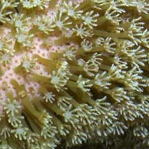 |
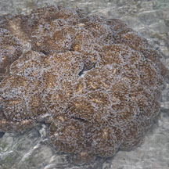 Pulau Semakau, Aug 11 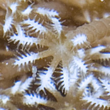 |
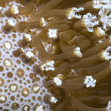 Cyrene Reef, Jun 12 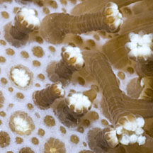 |
|
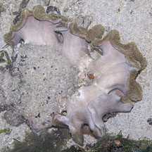 Colony usually mushroom shaped. Terumbu Pempang Laut, Aug 10 |
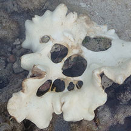 Bleaching and 'melting' colony during mass coral bleaching. Terumbu Pempang Tengah, Jul 16 |
*ID needs to be confirmed. Species are difficult to positively identify without close examination.
On this website, they are grouped by external features for convenience of display
| Omelette leathery soft corals on Singapore shores |
On wildsingapore
flickr
|
| Other sightings on Singapore shores |
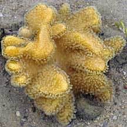 Terumbu Berkas, Jan 10 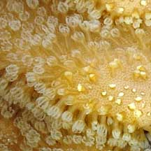 |
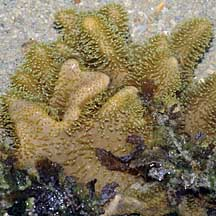 Pulau Pawai, Dec 09 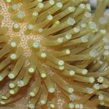 |
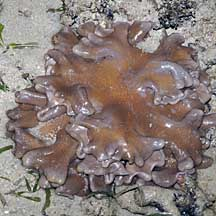 Pulau Senang, Aug 10 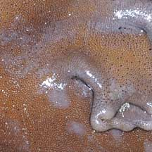 |
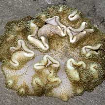 Pulau Senang, Jun 10 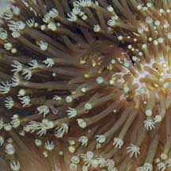 Bleaching. |
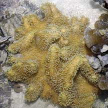 Pulau Salu, Aug 10 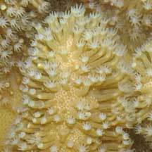 |
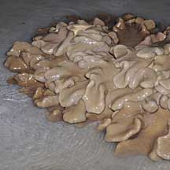 Pulau Sudong, Dec 09 |
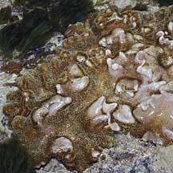 Terumbu Salu, Jan 10 |
| Sarcophyton
species recorded for Singapore from Checklist of Cnidaria (non-Sclerectinia) Species with their Category of Threat Status for Singapore by Yap Wei Liang Nicholas, Oh Ren Min, Iffah Iesa in G.W.H. Davidson, J.W.M. Gan, D. Huang, W.S. Hwang, S.K.Y. Lum, D.C.J. Yeo, May 2024. The Singapore Red Data Book: Threatened plants and animals of Singapore. 3rd edition. National Parks Board. 663 pp.
|
|
Links
References
|